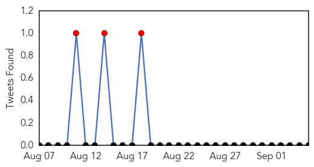
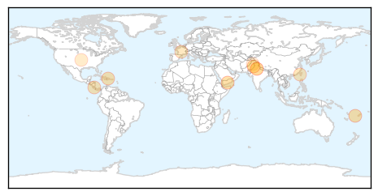
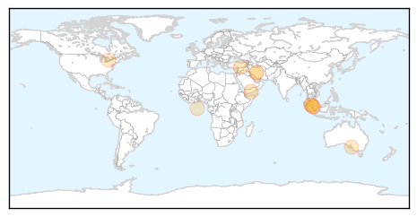
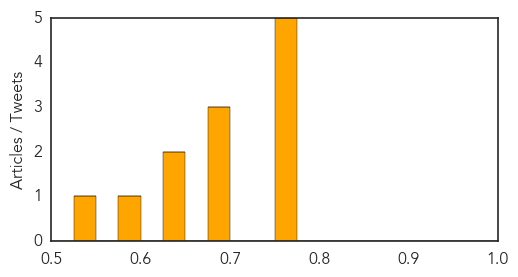

Dengue Fever
30-Day Web Trend
1 alerts, 0 warnings

30-Day Twitter Trend
4 alerts, 0 warnings

Article Locations
Article Confidences

Top Articles:
- 0.997
- UN Officials Warn of Dengue Outbreak in War-Torn Yemen
- 0.994
- Fiji health workers always on alert for leptospirosis
- 0.954
- 375 dengue cases in Kota; civic body, health department blame each other
- 0.951
- Ministry calls for more dengue research - Nation
- 0.931
- First dengue death reported in Haripur
- 0.917
- Public health must perform autopsies on dengue casualties: PAHO
- 0.859
- Thousands of Cases of Dengue Fever and Chikunguya in Honduras
- 0.801
- Taiwan cabinet to use reserve ...｜Society｜WCT
- 0.792
- No new facilities to deal with dengue, AAP forgets infra promise
- 0.724
- DOH expects availability anti-dengue vaccines by 2016
- 0.611
- "Tropical" Diseases Reappearing in the U.S.
- 0.517
- Not implementing guidelines: Govt issues notice to 16 primary schools
- 0.511
- Weighty Issues of Fat and Famished
- 0.508
- Staff’s son dies of dengue: AIIMS workers’ union holds protest, alleges negligence by doctors
Top Tweets:
-
No tweets found for Sep 05, 2015
Influenza
30-Day Web Trend
0 alerts, 0 warnings

30-Day Twitter Trend
4 alerts, 0 warnings

Article Locations
Article Confidences
Top Articles:
- 0.766
- Kiwi horses blamed for equine flu outbreak in Malaysia
- 0.757
- Agric Ministry & NADMO team up to prevent outbreak of bird flu in 3 northern regions
- 0.751
- September 5, 2015 Archives
- 0.751
- September 4, 2015 Archives
- 0.751
- September 4, 2015 Archives
- 0.683
- Make vaccine free to prevent this horrific disease
- 0.682
- Be vigilant, take action to keep infectious diseases under control
- 0.678
- Veterinary Services Department prohibits horse transfer after Equine Influenza outbreak
- 0.650
- Georgia poultry safe to eat, but eggs, turkeys to cost more
- 0.633
- Veterinary dept prohibits horse transfers after flu outbreak - Nation
- 0.583
- Horse races this month cancelled due to EI outbreak
- 0.532
- 720,000 eggs imported from Iran set ablaze in Farah
Top Tweets:
-
No tweets found for Sep 05, 2015